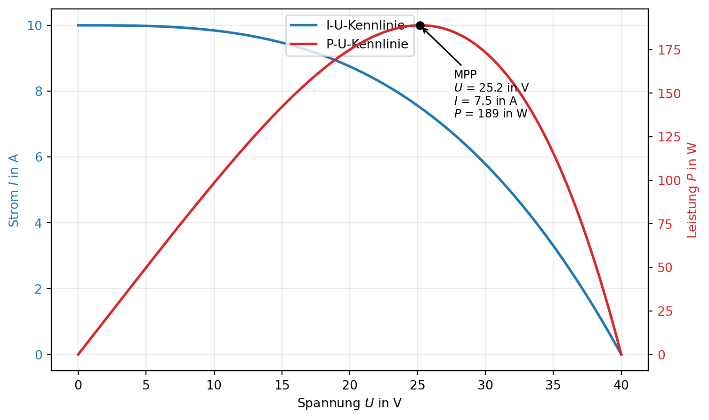
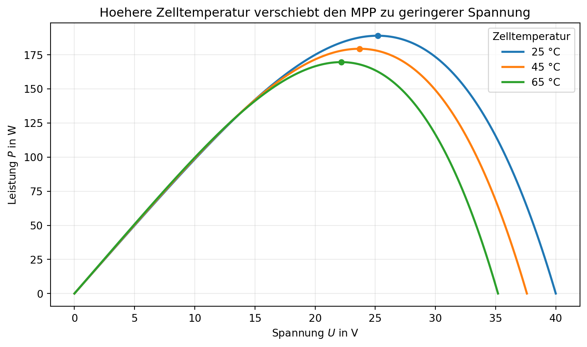

1 Marktanteil der Photovoltaik an der Stromerzeugung
Die Photovoltaik ist eine der wichtigsten erneuerbaren Energiequellen und hat in den letzten Jahren einen starken Zuwachs an Bedeutung erfahren.
In Österreich deckt die Photovoltaik inzwischen mehr als 17 % des nationalen Strombedarfs [1], Seite 18. Der mittlere Systempreis für eine schlüsselfertig installierte, netzgekoppelte 5 kWpeak Photovoltaikanlage lag im Jahr 2024 bei rund 1.551 Euro pro kWpeak exkl. MwSt. [1], Seite 18.
2 Kennzahlen der Photovoltaik
2.1 Einheiten
- Wattpeak (Wp) / Kilowattpeak (kWp): Übliche Angabe der PV-Nennleistung unter Standard-Testbedingungen (STC).
- Watt (W): Einheit der Leistung \(P\).
- Kilowattstunde (kWh): Einheit der elektrischen Energie \(E\).
- Euro pro Kilowattpeak (€/kWp): Übliche Kennzahl für spezifische Investitionskosten.
- Jahresertrag (kWh/(kWpa)): Elektrische Energie pro installierter Nennleistung und Jahr.
Hinweis zur Schreibweise von Einheiten (SI/DIN-üblich): Zwischen Zahlenwert und Einheit steht ein Leerzeichen, z. B. 10 kW, 340 W, 25 °C, 10 %.
2.2 Kennzahlen der Photovoltaik
Wirkungsgrad PV Paneele: Der Wirkungsgrad einer Photovoltaikanlage gibt an, wie effizient sie Sonnenlicht in elektrische Energie umwandeln kann. Typische Modulwerte liegen bei etwa 18 % bis 22 % (Top-Module teils etwas darueber).
Wirkungsgrad Wechselrichter: Gibt an, wie effizient der Wechselrichter DC in AC umwandelt. Typische europaeische Wirkungsgrade liegen bei etwa 96 % bis 99 %.
Wirkungsgrad Batterie (Roundtrip): Gibt an, wie viel der gespeicherten Energie beim Laden und Entladen nutzbar bleibt. Typische Werte fuer Lithium-Ionen-Speicher liegen bei etwa 85 % bis 95 %.
Installierte Leistung: Die installierte Leistung einer Photovoltaikanlage wird in Kilowattpeak (kWp) gemessen und gibt an, wie viel Leistung die Anlage maximal erzeugen kann. Typisch fuer Einfamilienhaeuser sind etwa 5 kWp bis 15 kWp.
Ertrag: Der Ertrag einer Photovoltaikanlage wird in Kilowattstunden (kWh) gemessen und gibt an, wie viel elektrische Energie die Anlage erzeugt. In Oesterreich liegen typische Jahresertraege grob bei ca. 900 bis 1.200 kWh pro kWp und Jahr (abhängig von Standort, Ausrichtung und Verschattung).
Investitionskosten: Die Investitionskosten geben an, wie viel die Anlage pro Kilowattpeak (kWp) gekostet hat. Als typische Groessenordnung fuer kleine bis mittlere Dachanlagen gelten etwa 1.200 bis 2.000 EUR pro kWp.
Amortisationszeit: Die Amortisationszeit einer Photovoltaikanlage gibt an, wie lange es dauert, bis die Investitionskosten durch eingesparte Stromkosten und Einspeiseerloese abgedeckt sind. Typische Werte liegen oft im Bereich von etwa 8 bis 15 Jahren.
3 Komponenten einer Photovoltaikanlage
3.1 Solarzellen
Solarzellen bestehen aus Halbleitermaterialien wie Silizium und wandeln Sonnenlicht direkt in elektrische Energie um (photovoltaischer Effekt). Trifft Licht auf die Zelle, entstehen freie Ladungsträger, die durch das innere elektrische Feld getrennt werden. Dadurch fließt ein Gleichstrom.
Für den Betrieb sind vor allem drei Größen wichtig:
- Spannung \(U\)
- Strom \(I\)
- Leistung \(P\) mit \(P = U \cdot I\)
Die Solarzelle hat keine lineare Kennlinie. Deshalb gibt es einen optimalen Arbeitspunkt mit maximaler Leistung, den Maximum Power Point (MPP). Dieser Punkt hängt von den Umgebungsbedingungen ab:
- höhere Einstrahlung: höherer Strom \(I\), meist höhere Leistung \(P\)
- höhere Zelltemperatur: geringere Spannung \(U\), meist geringere Leistung \(P\)
Für die Praxis bedeutet das: Der Energieertrag der Solarzelle wird dann maximal, wenn sie möglichst nahe am MPP betrieben wird.
3.1.1 Diagramm: I-U- und P-U-Kennlinie mit MPP
3.1.2 Diagramm: Temperatureinfluss auf die P-U-Kennlinie

3.2 Wechselrichter
Der Wechselrichter wandelt den Gleichstrom (DC) der PV-Module in netzkonformen Wechselstrom (AC) um, damit Verbraucher versorgt oder Energie ins Netz eingespeist werden kann. Moderne Geräte übernehmen zusätzlich die Regelung des Arbeitspunkts der PV-Module.
3.2.1 Grundlegende Funktionsbeschreibung
Ein Wechselrichter arbeitet vereinfacht in drei Stufen:
- DC-Eingang und Regelung: Der Eingang wird überwacht, und der Arbeitspunkt wird so eingestellt, dass die PV-Anlage möglichst nahe am MPP arbeitet.
- Leistungsschalter-Stufe: Leistungshalbleiter (z. B. MOSFETs oder IGBTs) schalten den Gleichstrom mit hoher Frequenz.
- Ausgangsaufbereitung: Über Filter und Regelung entsteht eine stabile Wechselspannung, die zu Netzfrequenz und Netzspannung passt.
3.2.2 Blockschaltbild
%%{init: {'theme':'base','themeVariables': { 'primaryColor':'#ffffff', 'primaryBorderColor':'#000000', 'primaryTextColor':'#000000', 'lineColor':'#000000', 'secondaryColor':'#ffffff', 'tertiaryColor':'#ffffff' }, 'flowchart': { 'curve':'linear' } }}%%
flowchart LR
A[PV-Eingang DC] --> B[MPPT und DC-Regelung]
B --> C[DC-Zwischenkreis]
C --> D[Leistungsteil<br/>DC-AC-Wandlung und Filterung]
D --> F[AC-Ausgang]
C --> I[Batterie]
I --> C
style A fill:#ffffff,stroke:#000000,color:#000000
style B fill:#ffffff,stroke:#000000,color:#000000
style C fill:#ffffff,stroke:#000000,color:#000000
style D fill:#ffffff,stroke:#000000,color:#000000
style F fill:#ffffff,stroke:#000000,color:#000000
style I fill:#ffffff,stroke:#000000,color:#000000
Wichtige Aufgaben des Wechselrichters im Betrieb:
- Synchronisation mit dem öffentlichen Netz
- Einhaltung von Spannungs- und Frequenzgrenzen
- Schutzfunktionen bei Fehlern (z. B. Überstrom, Übertemperatur, Netzausfall)
- Kommunikation und Monitoring (Leistung, Ertrag, Statusmeldungen)
Wichtig ist die Unterscheidung:
- MPP: der optimale Punkt auf der Kennlinie
- MPPT (Maximum Power Point Tracking): das Regelverfahren, das diesen Punkt laufend sucht und nachführt
Typische MPPT-Verfahren im Vergleich:
- Perturb and Observe (P&O)
- Incremental Conductance
- Constant Voltage (CV)
- Fester Arbeitspunkt
3.2.3 MPPT-Verfahren im Detail
Perturb and Observe (P&O)
- Prinzip: Der Regler ändert den Arbeitspunkt schrittweise und prüft, ob die Leistung steigt oder fällt.
- Vorteil: Einfach, robust und in vielen Geräten Standard.
- Nachteil: Im stationären Betrieb pendelt das Verfahren um den MPP und verliert dadurch etwas Ertrag.
- Typischer Einsatz: Kleine bis mittlere Anlagen mit moderaten Last- und Wetteränderungen.
Incremental Conductance
- Prinzip: Das Verfahren nutzt die MPP-Bedingung \(\frac{dP}{dU}=0\) und bestimmt daraus die Richtung der nächsten Stellgrößenänderung.
- Vorteil: Bessere Nachführung bei schnell wechselnder Einstrahlung.
- Nachteil: Höherer Rechen- und Messaufwand als P&O.
- Typischer Einsatz: Dynamische Bedingungen, bei denen schnelle und präzise Nachführung wichtig ist.
Constant Voltage (CV)
- Prinzip: Die PV-Spannung wird auf einen festen Anteil der Leerlaufspannung geregelt.
- Vorteil: Sehr einfach umzusetzen.
- Nachteil: Nur Näherung an den MPP, dadurch oft geringerer Ertrag.
- Typischer Einsatz: Einfache oder kostensensitive Systeme.
Fester Arbeitspunkt
- Prinzip: Betrieb mit fester Spannung oder fester Last ohne Nachführung.
- Vorteil: Minimaler Regelaufwand.
- Nachteil: Bei wechselnden Bedingungen häufig weit weg vom MPP.
- Typischer Einsatz: Didaktik, Sonderfälle oder stark vereinfachte Systeme.
3.2.4 Hybrid-Wechselrichter
Hybrid-Wechselrichter kombinieren PV-Wechselrichter und Batteriewechselrichter in einem Gerät. Sie können damit gleichzeitig PV-Erzeugung, Batteriespeicher und Lasten koordinieren.
Typische Betriebsmodi:
- PV versorgt Last direkt: Aktueller Verbrauch wird unmittelbar aus der PV gedeckt.
- PV lädt Batterie: Überschüsse werden gespeichert statt eingespeist.
- Batterie versorgt Last: Bei geringer PV-Leistung oder nachts.
- Netzbezug oder Einspeisung: Je nach Bilanz aus Erzeugung, Verbrauch und Speicherzustand.
Vorteile von Hybrid-Wechselrichtern:
- weniger Einzelgeräte und oft einfachere Installation
- zentrales Energiemanagement
- bessere Eigenverbrauchsoptimierung
- gute Grundlage für Notstrom- oder Ersatzstromfunktionen (geräteabhängig)
Worauf bei der Auswahl zu achten ist:
- kompatible Batteriesysteme und Schnittstellen
- Lade-/Entladeleistung und nutzbare Speicherkapazität
- Wirkungsgrad im realen Teillastbetrieb
- verfügbare Betriebsmodi (z. B. Backup, Peak Shaving, Zeitfenstersteuerung)
Ein vereinfachter Energiepfad lautet:
- PV-Module erzeugen DC-Leistung
- MPPT im Wechselrichter oder in einer vorgelagerten DC-DC-Stufe optimiert den Arbeitspunkt
- Wechselrichter wandelt in AC um
- AC-Leistung versorgt Lasten oder wird ins Netz eingespeist
Jede Umwandlungsstufe hat Verluste. Der Wirkungsgrad wird beschrieben durch \(\eta = \frac{P_{out}}{P_{in}}\). Gute Wechselrichter erreichen heute typischerweise einen Wirkungsgrad \(\eta\) von über 95 %.
3.2.5 Videoempfehlungen zu MPPT
3.3 Montagesystem
Das Montagesystem dient zur Befestigung der Solarmodule auf dem Dach oder dem Boden. Es muss stabil, wetterfest und optimal ausgerichtet sein, um eine effiziente Energieerzeugung zu gewährleisten.
Beispielhafte Hersteller von PV-Montagesystemen:
3.4 Verkabelung und Anschluss
Tätigkeiten bei Verkabelung und Anschluss:
- Leitungswege planen (DC/AC-Trennung, mechanischer Schutz, Brandschutz)
- Kabel und Leitungen dimensionieren (Strombelastbarkeit, Spannungsfall, Verlegeart)
- DC-seitige Leitungen verlegen und anschließen (Stringverkabelung, Stecker, Polarität)
- AC-seitige Leitungen vom Wechselrichter zur Verteilung herstellen
- Schutz- und Erdungsmaßnahmen umsetzen (Potentialausgleich, Überspannungsschutz, Abschaltorgane)
- Zählerplatz und Einspeisepunkt vorbereiten, Abstimmung mit Netzbetreiber
- Prüfen, dokumentieren, in Betrieb nehmen (Messprotokolle, Anlagenfreigabe)
Gültige Normen und Regelwerke (Auszug):
- OVE E 8101 (Errichtung von Niederspannungsanlagen)
- OVE/OENORM EN 62548 (Auslegung und Errichtung von PV-Generatoren)
- OVE/OENORM EN 62446-1 (Pruefung, Dokumentation und Inbetriebnahme von PV-Anlagen)
- TOR Erzeuger (Technische und organisatorische Regeln der Netzbetreiber fuer den Netzanschluss)
- Technische Anschlussbedingungen des jeweils zustaendigen Netzbetreibers (TAEV/TAB)
4 Auslegung einer Photovoltaikanlage
Siehe Unterlagen im OneNote.
Die Auslegung einer Photovoltaikanlage erfolgt typischerweise in klaren Einzelschritten.
- Bedarf analysieren
- Jahresstromverbrauch und Lastprofil erfassen
- Ziel definieren (Eigenverbrauch, Einspeisung, Speicher, Notstrom)
- Standort bewerten
- Dachflächen, Ausrichtung und Neigung aufnehmen
- Verschattung analysieren (Bäume, Kamine, Nachbargebäude)
- Statik und bauliche Randbedingungen prüfen
- PV-Generator dimensionieren
- Modulleistung und Anzahl der Module festlegen
- Stringaufteilung passend zum Wechselrichter planen
- Spannungs- und Stromgrenzen der Komponenten einhalten
- Wechselrichter und Speicher auswählen
- AC-Nennleistung passend zur Generatorgröße wählen
- MPPT-Anzahl und Eingangsbereiche prüfen
- Optional: Speichergröße und Lade-/Entladeleistung abstimmen
- Verkabelung und Schutzkonzept auslegen
- DC- und AC-Leitungsquerschnitte bestimmen
- Schutzorgane festlegen (Überstrom, Überspannung, Trennstellen)
- Erdung und Potentialausgleich planen
- Netzanschluss klären
- Anschlussbedingungen beim Netzbetreiber einholen
- Einspeisekonzept und Zählerkonzept abstimmen
- Erforderliche Meldungen und Unterlagen vorbereiten
- Ertrag und Wirtschaftlichkeit bewerten
- Jahresertrag unter Berücksichtigung von Lage und Verlusten abschätzen
- Eigenverbrauchsanteil und Einspeisung berechnen
- Investitionskosten, Betriebskosten und Amortisation vergleichen
- Dokumentation, Inbetriebnahme und Monitoring
- Anlagendokumentation und Prüfprotokolle erstellen
- Fachgerechte Inbetriebnahme durchführen
- Monitoring einrichten und Soll-Ist-Vergleich starten
Hilfreiche Links für Auslegung und Wirtschaftlichkeitsrechnung:
References
1.
Austria BP (2025) Kurzfassung PV-marktstatistik 2024. https://pvaustria.at/wp-content/uploads/BMIMI-marktstatistik-2024-kurzfassung.pdf. Accessed 27 May 2026